Butikken
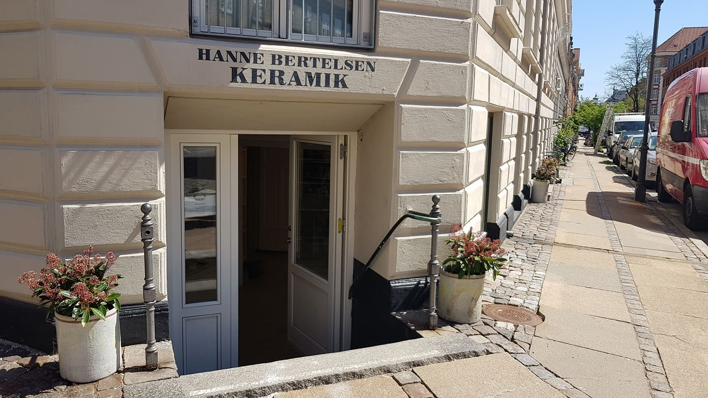 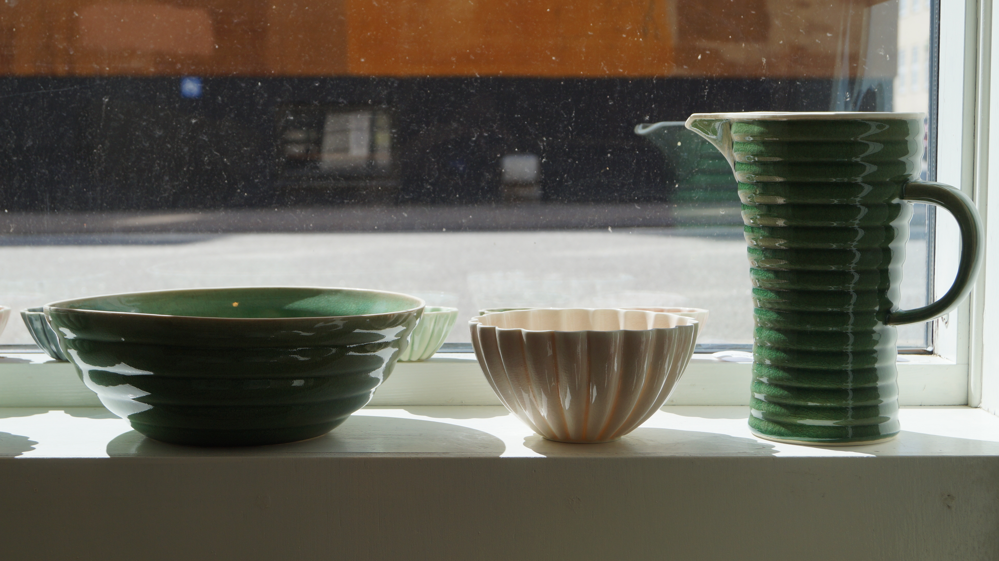 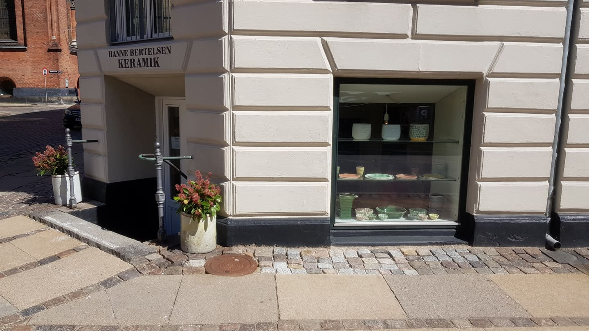 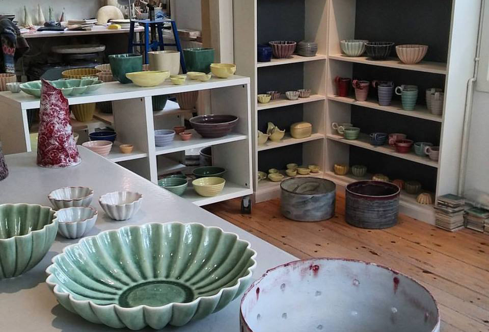Butik og værksted:
Sankt Paulsgade 72, 1313 K
Mobil: 2398 2309
mail@hannebertelsen.dk
Butikkens åbningstider:
Mandag: lukket (Jeg er her næsten altid om mandagen, men ring for en sikkerheds skyld i forvejen, så du ikke går forgæves.)
Tirsdag: 11.00 – 18.00
Onsdag: 11.00 – 18.00
Torsdag: lukket
Fredag: 11.00 – 18.00
Lørdag: 11.00 – 14.00
Jeg træffes ofte udover disse åbningstider. Ring evt. og lav en aftale.
Jeg brænder fadene omvendt, så de kan stå inde under hinanden ved brændingen, og bruger ingen skadelige stoffer i min produktion, så jeg kan gøre en forskel, ved at udnytte ovnbrændingerne bedre og derved mindske forbruget af strøm.
Værkstedet
 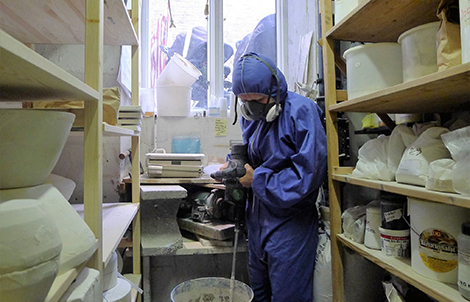
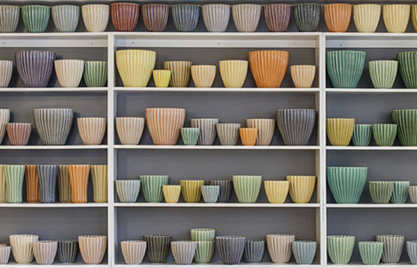
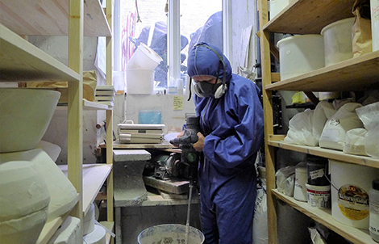
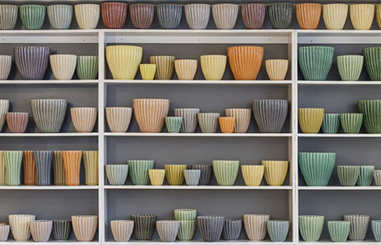
Kvalitetshåndværk
Mange danske keramikere vælger i dag at få produceret deres ting på keramikfabrikker i Østen. Jeg har valgt at lave alt i hånden på mit værksted her i Sankt Paulsgade 72 i København. Jeg støber mine ting i forme, og formene desinger og laver jeg i hånden.
Jeg bruger porcelænsler og stentøjslet, valgt fordi det er holdbart og fordi der er brændt højt. Det er sværere at arbejde med, men det er en del af processen og giver et godt håndværk i sidste ende.
Jeg bruger mange timer på at udvikle glasurer og farver, det er et endeløst arbejde men vildt fantastisk og givende. Resultatet bliver kvalitets håndværk, med farver og former der pryder hjemmet.
 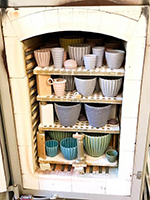
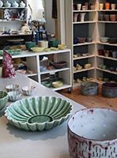
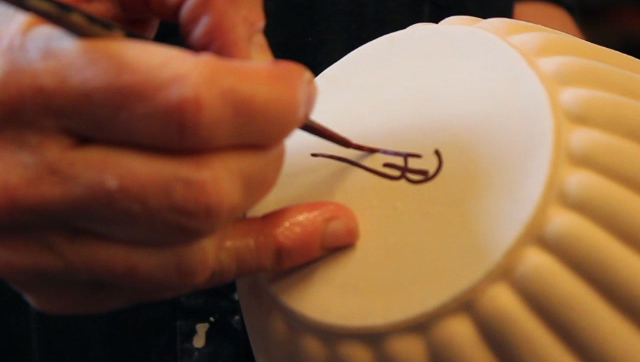
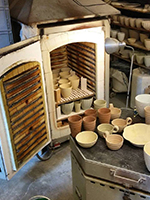
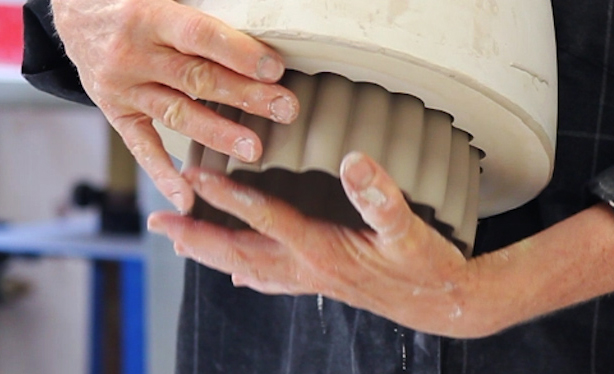
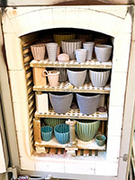
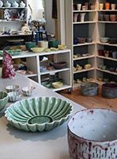
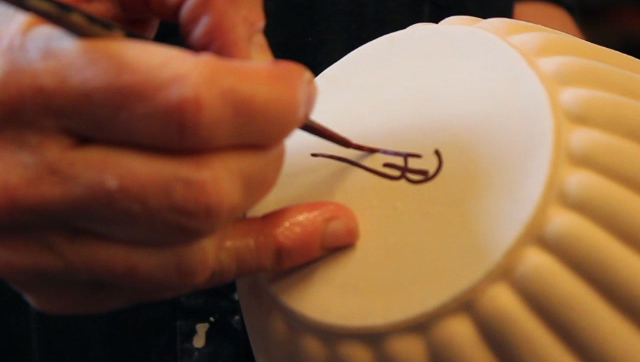
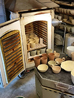
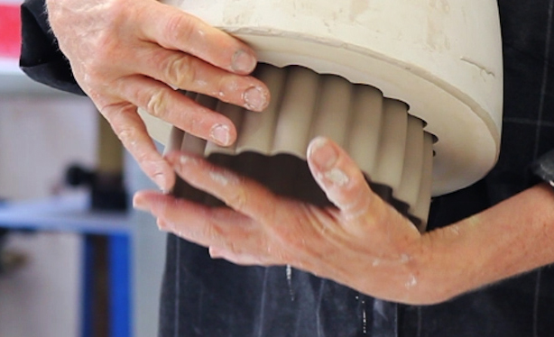